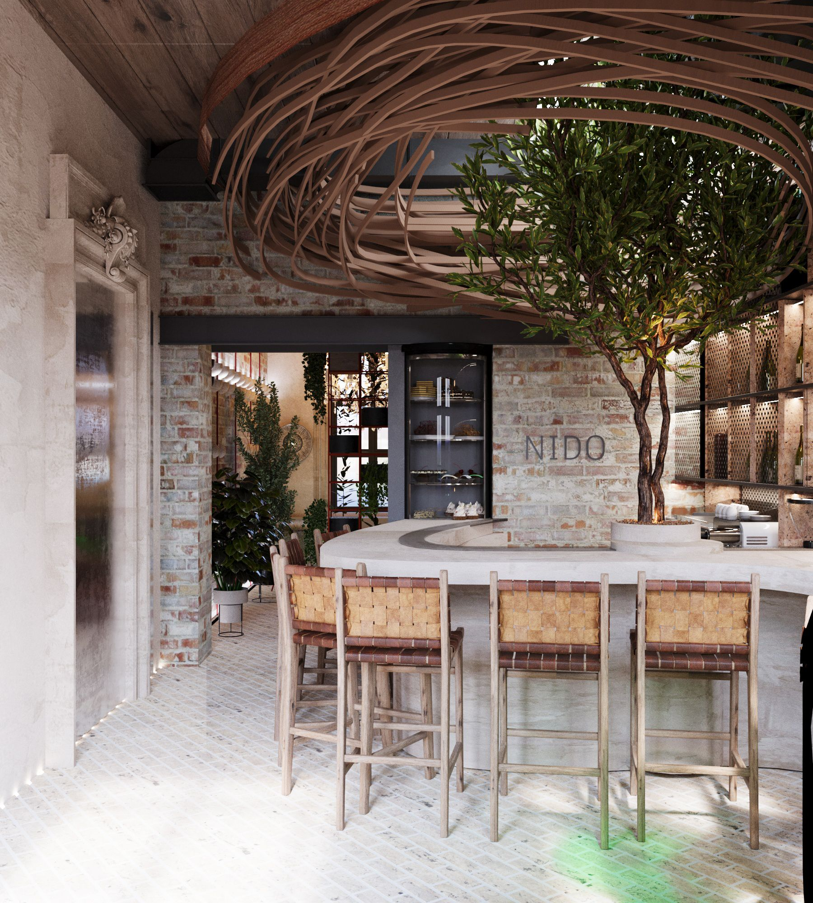
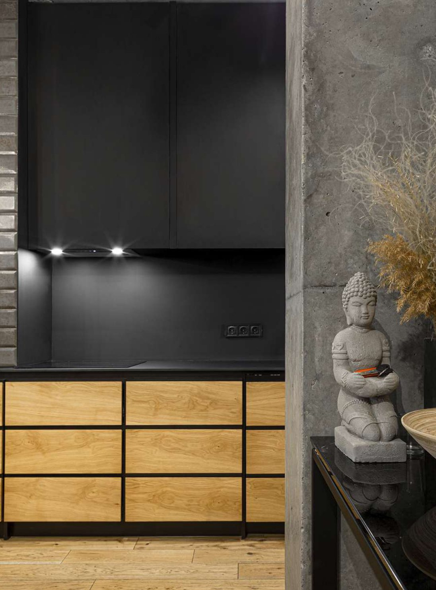
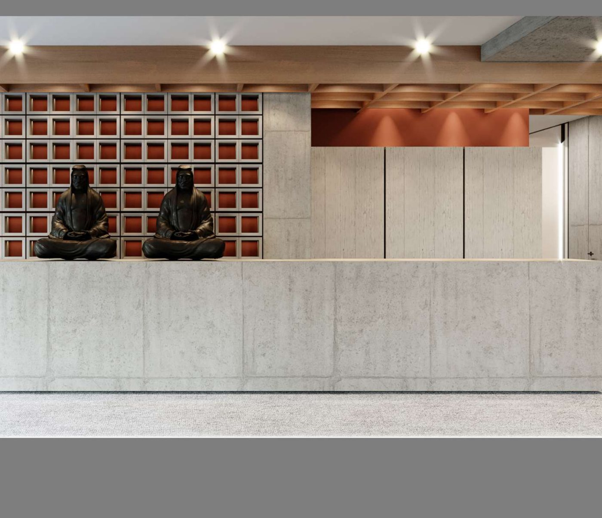

Портфоліо
Портфоліо

NIDO
Кафе-бар, зібраний навколо образу гнізда. Денна посадка й вечірня атмосфера — один простір, два сценарії світла.
HoReCa · Кафе / бар
PERSONAGE
Флагманський бутік сумок і взуття в Запоріжжі. Бетон, дзеркало й світло — щоб колекція була першим, що бачить гість.
Retail · Запоріжжя
Cozy loft
Інтер’єр у Дніпрі: чорний метал, світле дерево, бетон. Кухня як тиха вісь квартири.
Interior
Office space
Офісний хол у Дніпрі: бетонна стійка, дерев’яна стеля, решітка фасаду. Світло й текстура замість декору.
Office